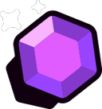
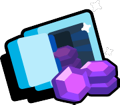
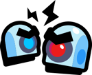
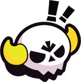
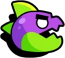
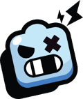
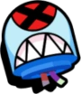
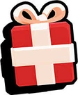

Nuestros eventos
Los eventos son minijuegos que que hay dentro de Brawl Stars. Hay eventos permanentes, eventos que se van rotando y eventos de fin de semana.
| Evento | Tipo de evento |
|---|---|
|  | 3c3 y evento permanente. Se trata de conseguir gemas que salen del centro del mapa, al llegar a 10 (o más) gemas se carga un contador de 15 segundos cuando se termina el equipo de las 10 gemas gana, si tienes gemas y te matan pierdes las gemas y si el contador estaba activo, se reinicia y no vuelve a cargar hasta que tu equipo vuelva a tener diez gemas. |
|  | 3c3 y evento de rotación. Como su nombre lo indica, tienes que atracar la caja fuerte del enemigo, esto se consigue destruyéndola. Pero ¡cuidado! los rivales también intentarán destruir tu caja fuerte. |
|  | 3c3 y evento de rotación, actualmente eliminado. Recolecta tornillos para mejorar tu base. Cada cierto tiempo habrá un asedio, y el equipo que más tornillos haya recolectado durante ese tiempo será el ganador del Asedio. Al ganar, saldrá un robot de la base que irá directito a la base del enemigo, ganará quien al acabarse el tiempo (2 minutos, 3 asedios) haya causado más daño a la base rival. |
|  | 5 contra un Megabrawler y evento de fin de semana. En este evento debes derrotar a un megabrawl que tendrá mucha vida y ataque, deberás derrotarlo para ganar, si te toca megabrawler deberás sobrevivir durante dos minutos para ganar. |
|  | 3 contra un dinosaurio gigante y evento de fin de semana. Actualmente eliminado. En este modo de juego debes derrotar a un dinosaurio gigante antes de que destruya la ciudad. |
|  | 3 contra robots ladrones y evento de fin de semana. En este evento debes proteger una caja de los robots que se irán acercando y de vez en cuando sale un robot jefe que dispara cohetes rompiendo paredes. Ganas si tu caja sobrevive dos minutos. |
|  | Modo eliminado (No disponible desde Marzo de 2020 y con una breve reaparición en 2021 y otra reaparición en la temporada 19) Este evento trata de que diez personas infligirán la mayor cantidad de daño posible a un robot jefe, el que le haya hecho más daño ganaba. El robot tenía distintos tipos de ataques para evitar que lo dañaras, parecido a Todos Contra Uno. |
| Modo eliminado (No disponible desde Marzo de 2020 y con una breve reaparición en 2021) Este evento tiene el mismo objetivo que Caza Estelar, solo que era cada quién por su cuenta. | |
|  | 3c3 y evento de Navidad. Se trata de agarrar regalos que hay en cada base del mapa, luego lo tienes que llevar a la zona de tu equipo, el primer equipo en tener dos regalos en su zona gana. Nota: Este evento fue reelaborado y renombrado a Robo de Trofeos (Por el verano de 2021) |